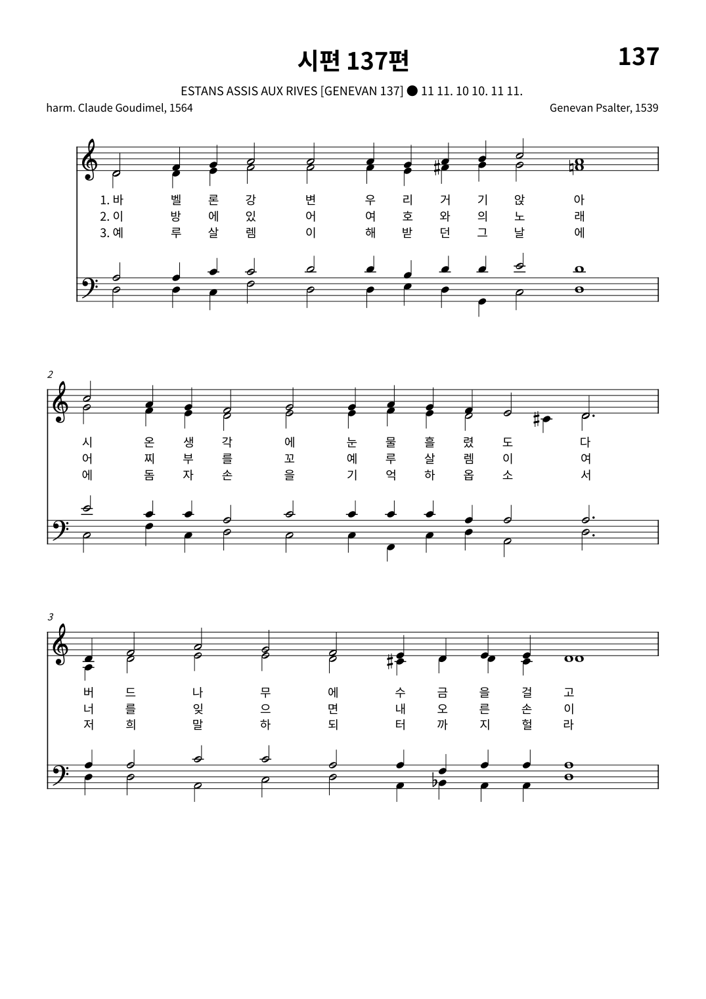
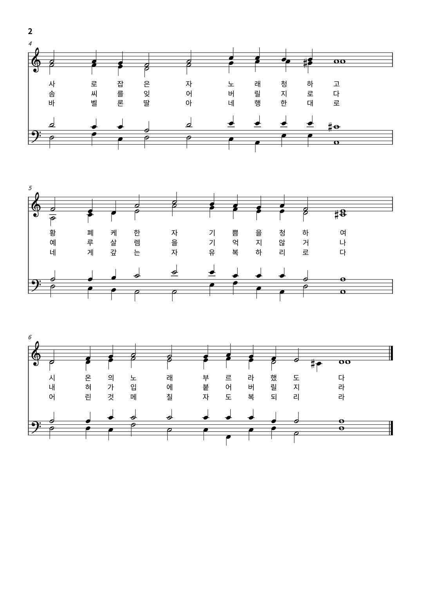

시편 137편
ESTANS ASSIS AUX RIVES [GENEVAN 137] · 11 11. 10 10. 11 11.
곡조: Genevan Psalter, 1539 · 화성: Claude Goudimel, 1564 · 가사: 개역한글판 시편 137편 편역(AI 초벌 편역판 · 신학 감수 전) · 3절
악보 PDF MusicXML(출력용) MusicXML(반주용, 전주·반복 포함) 개역한글 시편 137편 읽기
악보


가사
1절
바벨론 강변 우리 거기 앉아
시온 생각에 눈물 흘렸도다
버드나무에 수금을 걸고
사로잡은 자 노래 청하고
황폐케 한 자 기쁨을 청하여
시온의 노래 부르라 했도다
바벨론 강변 우리 거기 앉아
시온 생각에 눈물 흘렸도다
버드나무에 수금을 걸고
사로잡은 자 노래 청하고
황폐케 한 자 기쁨을 청하여
시온의 노래 부르라 했도다
2절
이방에 있어 여호와의 노래
어찌 부를꼬 예루살렘이여
너를 잊으면 내 오른손이
솜씨를 잊어 버릴지로다
예루살렘을 기억지 않거나
내 혀가 입에 붙어 버릴지라
이방에 있어 여호와의 노래
어찌 부를꼬 예루살렘이여
너를 잊으면 내 오른손이
솜씨를 잊어 버릴지로다
예루살렘을 기억지 않거나
내 혀가 입에 붙어 버릴지라
3절
예루살렘이 해 받던 그 날에
에돔 자손을 기억하옵소서
저희 말하되 터까지 헐라
바벨론 딸아 네 행한 대로
네게 갚는 자 유복하리로다
어린 것 메칠 자도 복되리라
예루살렘이 해 받던 그 날에
에돔 자손을 기억하옵소서
저희 말하되 터까지 헐라
바벨론 딸아 네 행한 대로
네게 갚는 자 유복하리로다
어린 것 메칠 자도 복되리라